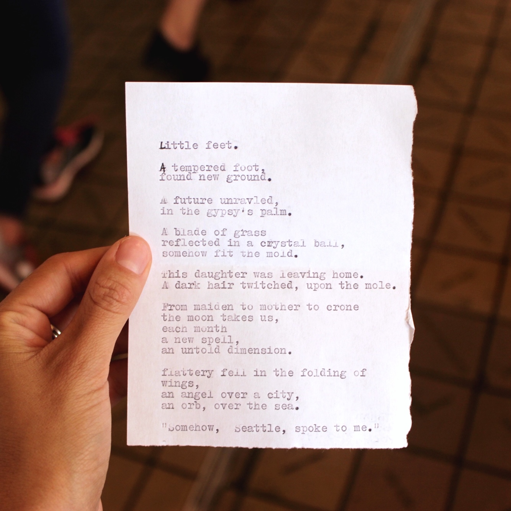

Thank you for your click on my webpage.
Let me introduce myself. My name is Marianne and I was born in 1992.
I'm studying at Institut Mines Telecom Business School but I'm also working, as a trainee, since many years.
On this page, you will discover my resume, my hobies and finally my contact.
Enjoy your time on this page.
This association is organizing events around the Dinard British Film Festival. My missions:
If you red my resume, you might guess that I really like cinema. My favorites directors are Quentin Tarantino, Cedric Klapisch and Pedro Almodovar and my favorite movies are : Pulp Fiction, Paris & Volver.
One of my favorites hoby is also fashion. I really like to watch fashion shows and discover how brilliants creatives directors could be. I often use the "Vogue Runway" app to see the last shows and I am also a big fan of Loic Prigent's work, who realise shorts documentarys about the world of fashion. You want to discover his work? Click here!
I'm a huge fan of poetry and especially two poets : Paul Elluard and Charles Baudelaire. I can spend hours and hours reading them. My two favorites collections are : "Les fleurs du mal" and "Capital de la douleur".
Travelling is one of my passion, if I could spend my all life discovering all the countries of the world I would do it. One of my best travel was in Malaysia. I've been there for a month. It was a wonderfull travel. Also, I've been many times to Great Britain and I visited most of European countries. But it is just the beginning. I hope I'll continue to travel a lot in my future life.